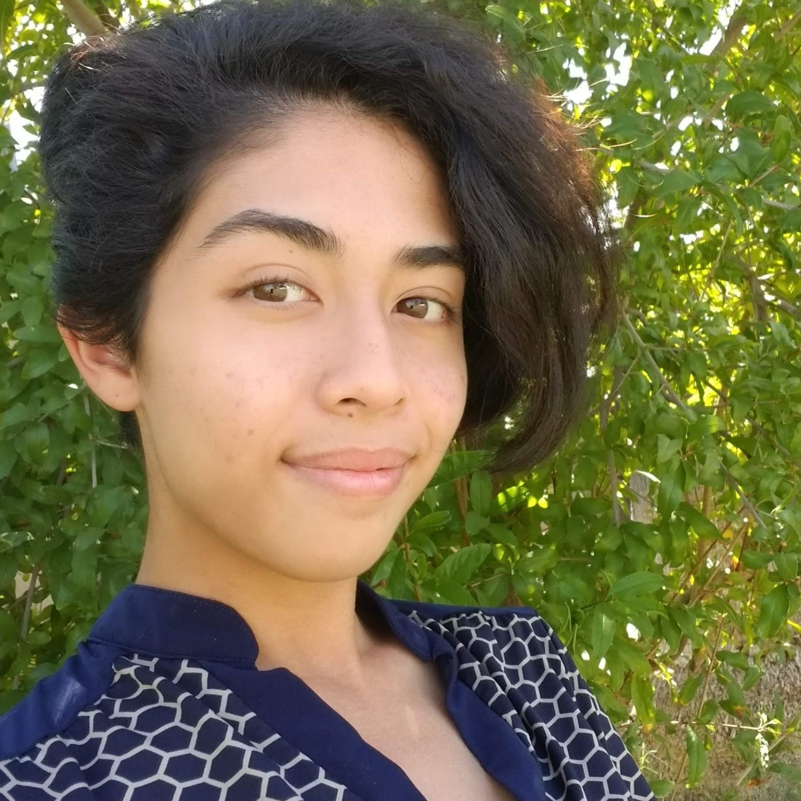

I’m Olivia Reyes, a Freshman at ASU studying Digital Culture with a focus in Design.
I strive to learn more about digital media
and programming as a means of venturing into
new and creative spaces. I have a great share of retail and customer service experience.
When thinking about what motivates me it quite simple: people.
Volunteering in my community and helping people get what
they need done
is the basis of my career path. People are my passion, because being a
positive impact on people, creates a
thriving community, and a better world.
| School | Address | Major | Graduate? |
|---|---|---|---|
| Barry Goldwater HighSchool | 2820 W Rose Garden Ln, 85027 | N/A | Yes |
| Arizona State University | Tempe, AZ 85281 | Digital Culture(Design) | Expected May 2021 |